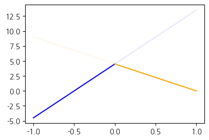
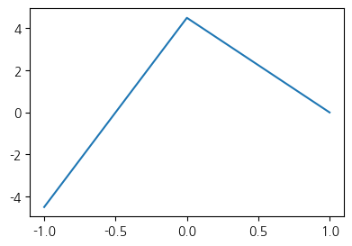
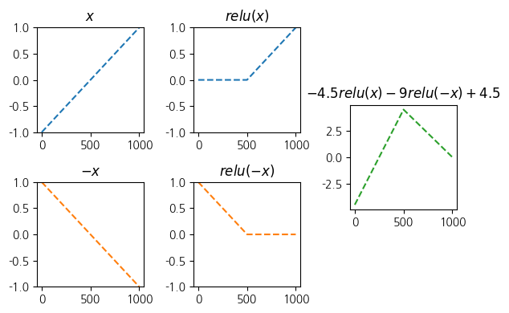
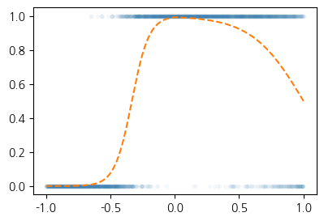
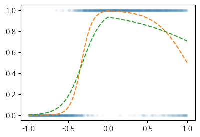
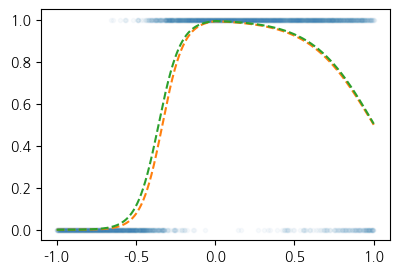

import torch
import matplotlib.pyplot as plt
import pandas as pd1. imports
plt.rcParams['figure.figsize'] = (4.5, 3.0)2. 꺽인 직선을 만드는 방법
- 로지스틱의 한계를 극복하기 위해서는 시그모이드를 취하기 전 꺽인 그래프 모양을 만들어야함
- 아래와 같은 벡터 \(x\)가정
x = torch.linspace(-1,1,1001).reshape(-1,1)
xtensor([[-1.0000],
[-0.9980],
[-0.9960],
...,
[ 0.9960],
[ 0.9980],
[ 1.0000]])- 목표: 아래와 같은 벡터 \({\bf y}\)를 만들어보자.
\[{\bf y} = [y_1,y_2,\dots,y_{n}]^\top, \quad y_i = \begin{cases} 9x_i +4.5& x_i <0 \\ -4.5x_i + 4.5& x_i >0 \end{cases}\]
- 방법1 수식 그대로 구현
plt.plot(x,9*x+4.5,color="blue",alpha=0.1)
plt.plot(x[x<0], (9*x+4.5)[x<0],color="blue")
plt.plot(x,-4.5*x+4.5,color="orange",alpha=0.1)
plt.plot(x[x>0], (-4.5*x+4.5)[x>0],color="orange")
y = x*0
y[x<0] = (9*x+4.5)[x<0]
y[x>0] = (-4.5*x+4.5)[x>0]
plt.plot(x,y)_files/figure-html/cell-6-output-1.png)
- 방법2 ReLU 이용
relu = torch.nn.ReLU()
#plt.plot(x,-4.5*relu(x),color="red")
#plt.plot(x,-9*relu(-x),color="blue")
y = -4.5*relu(x) + -9*relu(-x) + 4.5
plt.plot(x,y)
- ReLU 중간과정
fig = plt.figure(figsize=(6, 4))
spec = fig.add_gridspec(4, 3)
ax1 = fig.add_subplot(spec[:2,0]); ax1.set_title(r'$x$'); ax1.set_ylim(-1,1)
ax2 = fig.add_subplot(spec[2:,0]); ax2.set_title(r'$-x$'); ax2.set_ylim(-1,1)
ax3 = fig.add_subplot(spec[:2,1]); ax3.set_title(r'$relu(x)$'); ax3.set_ylim(-1,1)
ax4 = fig.add_subplot(spec[2:,1]); ax4.set_title(r'$relu(-x)$'); ax4.set_ylim(-1,1)
ax5 = fig.add_subplot(spec[1:3,2]); ax5.set_title(r'$-4.5 relu(x)-9 relu(-x)+4.5$')
#---#
ax1.plot(x,'--',color='C0')
ax2.plot(-x,'--',color='C1')
ax3.plot(relu(x),'--',color='C0')
ax4.plot(relu(-x),'--',color='C1')
ax5.plot(-4.5*relu(x)-9*relu(-x)+4.5,'--',color='C2')
fig.tight_layout()
- 방법3 ReLU의 브로드캐스팅 활용
- 아래와 같은 아이디어로 y를 계산해도 된다.
- x, relu 준비
- u = [x -x]
- v = relu(u) = [relu(x), relu(-x)] = [v1 v2]
- y = -4.5*v1 + -9*v2 + 4.5
u = torch.concat([x,-x],axis=1)
v = relu(u)
v1 = v[:,[0]]
v2 = v[:,[1]]
y = -4.5*v1 -9*v2 + 4.5
plt.plot(x,y)_files/figure-html/cell-9-output-1.png)
- 방법4 y=linr(v)
x
u = torch.concat([x,-x],axis=1)
v = relu(u)
y = v @ torch.tensor([[-4.5],[-9]]) + 4.5
plt.plot(x,y)_files/figure-html/cell-10-output-1.png)
- 방법5u=linr(x)
x
u = x @ torch.tensor([[1.0, -1.0]])
v = relu(u)
y = v @ torch.tensor([[-4.5],[-9]]) + 4.5 plt.plot(x,y)_files/figure-html/cell-12-output-1.png)
- 방법6 torch.nn.Linear()를 이용
# u = l1(x) # l1은 x->u인 선형변환: (n,1) -> (n,2) 인 선형변환
l1 = torch.nn.Linear(1,2,bias=False)
l1.weight.data = torch.tensor([[1.0, -1.0]]).T
a1 = relu
l2 = torch.nn.Linear(2,1,bias=True)
l2.weight.data = torch.tensor([[-4.5],[-9]]).T
l2.bias.data = torch.tensor([4.5])
#---#
x
u = l1(x)
v = a1(u)
y = l2(v) plt.plot(x,y.data)_files/figure-html/cell-14-output-1.png)
pwlinr = torch.nn.Sequential(l1,a1,l2)
plt.plot(x,pwlinr(x).data)_files/figure-html/cell-15-output-1.png)
- 수식적 표현
Note
수식표현
(1)\({\bf X}=\begin{bmatrix} x_1 \\ \dots \\ x_n \end{bmatrix}\)
(2)\(l_1({\bf X})={\bf X}{\bf W}^{(1)}\overset{bc}{+} {\boldsymbol b}^{(1)}=\begin{bmatrix} x_1 & -x_1 \\ x_2 & -x_2 \\ \dots & \dots \\ x_n & -x_n\end{bmatrix}\)
- \({\bf W}^{(1)}=\begin{bmatrix} 1 & -1 \end{bmatrix}\)
- \({\boldsymbol b}^{(1)}=\begin{bmatrix} 0 & 0 \end{bmatrix}\)
(3)\((a_1\circ l_1)({\bf X})=\text{relu}\big({\bf X}{\bf W}^{(1)}\overset{bc}{+}{\boldsymbol b}^{(1)}\big)=\begin{bmatrix} \text{relu}(x_1) & \text{relu}(-x_1) \\ \text{relu}(x_2) & \text{relu}(-x_2) \\ \dots & \dots \\ \text{relu}(x_n) & \text{relu}(-x_n)\end{bmatrix}\)
(4)\((l_2 \circ a_1\circ l_1)({\bf X})=\text{relu}\big({\bf X}{\bf W}^{(1)}\overset{bc}{+}{\boldsymbol b}^{(1)}\big){\bf W}^{(2)}\overset{bc}{+}b^{(2)}\)\(\quad=\begin{bmatrix} -4.5\times\text{relu}(x_1) -9.0 \times \text{relu}(-x_1) +4.5 \\ -4.5\times\text{relu}(x_2) -9.0 \times\text{relu}(-x_2) + 4.5 \\ \dots \\ -4.5\times \text{relu}(x_n) -9.0 \times\text{relu}(-x_n)+4.5 \end{bmatrix}\)
- \({\bf W}^{(2)}=\begin{bmatrix} -4.5 \\ -9 \end{bmatrix}\)
- \(b^{(2)}=4.5\)
(5)\(\textup{pwlinr}({\bf X})=(l_2 \circ a_1\circ l_1)({\bf X})=\text{relu}\big({\bf X}{\bf W}^{(1)}\overset{bc}{+}{\boldsymbol b}^{(1)}\big){\bf W}^{(2)}\overset{bc}{+}b^{(2)}\)\(\quad =\begin{bmatrix} -4.5\times\text{relu}(x_1) -9.0 \times \text{relu}(-x_1) +4.5 \\ -4.5\times\text{relu}(x_2) -9.0 \times\text{relu}(-x_2) + 4.5 \\ \dots \\ -4.5\times \text{relu}(x_n) -9.0 \times\text{relu}(-x_n)+4.5 \end{bmatrix}\)
3. 스펙의 역설 적합
df = pd.read_csv("https://raw.githubusercontent.com/guebin/DL2025/main/posts/ironyofspec.csv")x = torch.tensor(df.x).float().reshape(-1,1)
y = torch.tensor(df.y).float().reshape(-1,1)
prob = torch.tensor(df.prob).float().reshape(-1,1)plt.plot(x,y,'.',alpha=0.03)
plt.plot(x,prob,'--')
- Step1에 대한 생각: 네트워크를 어떻게 만들까? = 아키텍처를 어떻게 만들까? = 모델링
\[\underset{(n,1)}{\bf X} \overset{l_1}{\to} \underset{(n,2)}{\boldsymbol u^{(1)}} \overset{a_1}{\to} \underset{(n,2)}{\boldsymbol v^{(1)}} \overset{l_1}{\to} \underset{(n,1)}{\boldsymbol u^{(2)}} \overset{a_2}{\to} \underset{(n,1)}{\boldsymbol v^{(2)}}=\underset{(n,1)}{\hat{\boldsymbol y}}\]
- \(l_1\):
torch.nn.Linear(1,2,bias=False) - \(a_1\):
torch.nn.ReLU() - \(l_2\):
torch.nn.Linear(2,1,bias=True) - \(a_2\):
torch.nn.Sigmoid()
- Step1-4
net[0].weight.datatensor([[ 0.5153],
[-0.4414]])net[2].weight.datatensor([[-0.1371, 0.3319]])net[0].weight.datatensor([[ 1.7773],
[-3.0447]])net[2].weight.datatensor([[-0.9945, -2.7176]])torch.manual_seed(1)
net = torch.nn.Sequential(
torch.nn.Linear(1,2,bias=False),
torch.nn.ReLU(),
torch.nn.Linear(2,1,bias=True),
torch.nn.Sigmoid()
)
loss_fn = torch.nn.BCELoss()
optimizr = torch.optim.Adam(net.parameters())for epoc in range(5000):
## step1
yhat = net(x)
## step2
loss = loss_fn(yhat,y)
## step3
loss.backward()
## step4
optimizr.step()
optimizr.zero_grad()plt.plot(x,y,'.',alpha=0.03)
plt.plot(x,prob,'--')
plt.plot(x,yhat.data,'--')
- 5000번 더 반복
for epoc in range(5000):
## step1
yhat = net(x)
## step2
loss = loss_fn(yhat,y)
## step3
loss.backward()
## step4
optimizr.step()
optimizr.zero_grad()plt.plot(x,y,'.',alpha=0.03)
plt.plot(x,prob,'--')
plt.plot(x,yhat.data,'--')